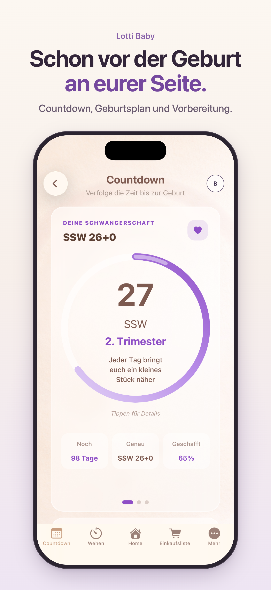

01 SCHWANGERSCHAFT
Wehen festhalten. Einen Überblick behalten.
Wenn ihr Wehen beobachtet, hilft eine ruhige Übersicht: Wann ging es los, wie lange hat die Wehe gedauert und wann kam die nächste? Mit dem Wehen-Timer von Lotti Baby haltet ihr diese Zeiten fest.
Lotti Baby im App StoreFür iPhone und iPad. Anmeldung erforderlich. Der Funktionsumfang hängt vom gewählten Abonnement ab; Preise und Laufzeiten seht ihr vor dem Kauf in der App.

IM ALLTAG
So nutzt ihr den Wehen-Timer
Starten und stoppen
Öffnet den Wehen-Tracker in der App. Startet die Zeitmessung zu Beginn einer Wehe und beendet sie, wenn die Wehe nachlässt.
Den Verlauf ansehen
Schaut die erfassten Zeiten im Verlauf nach. So müsst ihr euch Dauer und Abstände nicht im Kopf merken.
Für Gespräche nachschauen
Die Aufzeichnungen können euch helfen, eure Beobachtungen bei einem Gespräch mit eurer Hebamme oder Geburtsklinik zu beschreiben.
Schon vor der Geburt an eurer Seite
Lotti Baby verbindet den Wehen-Timer mit einem Countdown bis zum Geburtstermin, einem Geburtsplan und einer Klinik-Checkliste. Nach der Geburt könnt ihr Stillen, Fläschchen, Windeln und Schlaf festhalten. Welche Funktionen verfügbar sind, hängt vom gewählten Tarif ab.